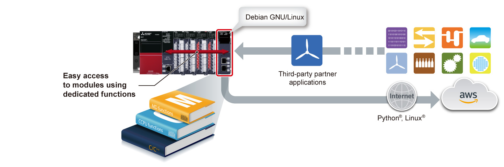

Controllers MELSEC iQ-R Series Product features -CPU-

C Controller module, C intelligent function module
The C Controller and C intelligent function modules are open platform controllers that can execute C/C++ programs, based on the MELSEC system architecture, and utilize long-term stable supply, high availability, advanced functionality, and flexible features.
High-speed complex processing that is not possible with a ladder program is achieved while carrying out the MELSEC iQ-R Series module management and I/O control in C/C++ programs.
C Controller module

RAM: 256 MB
- Real-time control
Embedded with VxWorks®, the C Controller realizes real-time control which may not be possible with a general-purpose OS. - High-speed processing
C language (C/C++) based programming realizes a high-speed processing. - Easier system configuration
The module can be immediately utilized as the C Controller dedicated functions are pre-installed.
C Controller module<sup>Interface</sup>

C intelligent function module

- Distributed control with the CPU module
Control processing is performed in the programmable controller CPU module and information processing in the C intelligent function module, reducing overall processing time. - Extend functions of the existing facility
Implementation of functions such as complex operations and protocol conversion according to the current system is possible. - Multiple operating systems supported
VxWorks® that improves data analysis accuracy is pre-installed and Linux® that executes Python® and such used for machine learning can be installed.*1
- *1.This product is pre-installed with VxWorks®. As for Linux®, OS images need to be downloaded separately.
C intelligent function module<sup>Interface</sup>
Features<sup>Troublesome information processing is easy in C/C++</sup>
- C/C++ program
- Easy programming
- Intelligent protection
- Troublesome information processing (complex arithmetic and string processing) is much easier in C/C++ programs than implementing in ladder form
- Intellectual property is simplified by separating it from the ladder program using C Controller module or C intelligent function module, preventing leakage of proprietary technology

Easier development utilizing dedicated functions and partner applications
- Dedicated functions and libraries
- Partner applications
- Debian GNU/Linux
- Easily access to modules using dedicated functions and communication libraries. In addition, by utilizing partner applications supporting different manufacturing equipment features, various systems can be configured
- The C intelligent function module utilizes Debian GNU/Linux allowing machines to utilize the latest data processing technology developed by the community, helping to reduce development time
- Key features such as remote operation, predictive maintenance, and remote maintenance of machines can be easily implemented in the C intelligent function module through connection with third-party cloud services

Easy parameter setup, diagnostics, monitoring and test in the dedicated development environmentR12CCPU-V
- Easy setup
- Easy diagnostics
- CW Configurator enables parameter setup, module diagnostics, monitoring, and test of various MELSEC iQ-R/Q Series modules including the C Controller module
- Using CW Configurator is as easy as using the engineering software GX Works3, which shares similar interfaces
Application development in simple steps
- Easy programming
- Simulation without hardware
- Developing applications with the C Controller module is easy as no additional driver development is required, thereby providing a full-scale embedded development environment at a relatively low cost
- CW Workbench enables programming in C/C++
- CW-Sim/CW-Sim Standalone allows simulation of VxWorks® without requiring any hardware

Specifications
C Controller module specifications
| Item | R12CCPU-V |
|---|---|
| Hardware | |
| MPU | Arm® Cortex®-A9 Dual Core |
| RAM (byte) | 256M |
| ROM (byte) | 16M |
| Backup RAM (byte) | 4096K (file storage area of device/label memory: 3584 KB, for system: 512 KB) |
| Software | |
| OS | VxWorks® Version 6.9*2 |
| Programming language | C/C++ |
| Programming development environment | CW Workbench/Wind River® Workbench 3.3*2 |
| C Controller module setting/monitoring tool | CW Configurator (SW1DND-RCCPU) |
| Communication interface | |
| USB | ● |
| Ethernet(1000BASE-T/100BASE-TX/10BASE-T) (ch) | 2 |
| RS-232 (9600…115200 bps) (ch) | 1 |
| SD memory card slot | ● |
- *2.VxWorks® 6.9 and Wind River® Workbench 3.3 are products of Wind River Systems, Inc. in the United States.
For any inquiries on products of Wind River Systems, Inc. in the United States, please refer to the manuals of Wind River Systems products or contact Wind River Systems, Inc. in Japan.
Please visit the website below.
www.windriver.com
C intelligent function module specifications
| Item | RD55UP06-V | RD55UP12-V | |
|---|---|---|---|
| Hardware | |||
| MPU | Arm® Cortex®-A9 Dual Core | ||
| RAM (byte) | 128M | 1G | |
| ROM (byte) | 12M | ||
| Software | |||
| OS | VxWorks® Version 6.9 (installed by default)*3/Debian GNU/Linux | ||
| Programming language | C/C++ | ||
| Programming development environment | VxWorks® Version 6.9 | CW Workbench/Wind River® Workbench 3.3*3 | |
| Debian GNU/Linux | TimeStorm®/Visual Studio® | ||
| Setting/monitoring tool | GX Works3 (SW1DND-GXW3-E)*4 | ||
| Communication interface | |||
| Ethernet (1000BASE-T/100BASE-TX/10BASE-T) (ch) |
1 | 2 | |
| SD memory card slot | ● | ||
- *3.VxWorks® 6.9 and Wind River® Workbench 3.3 are products of Wind River Systems, Inc. in the United States.
For any inquiries on products of Wind River Systems, Inc. in the United States, please refer to the manuals of Wind River Systems products or contact Wind River Systems, Inc. in Japan.
Please visit the website below.
www.windriver.com - *4.Setting and monitoring of the module is integrated within the engineering software GX Works3.